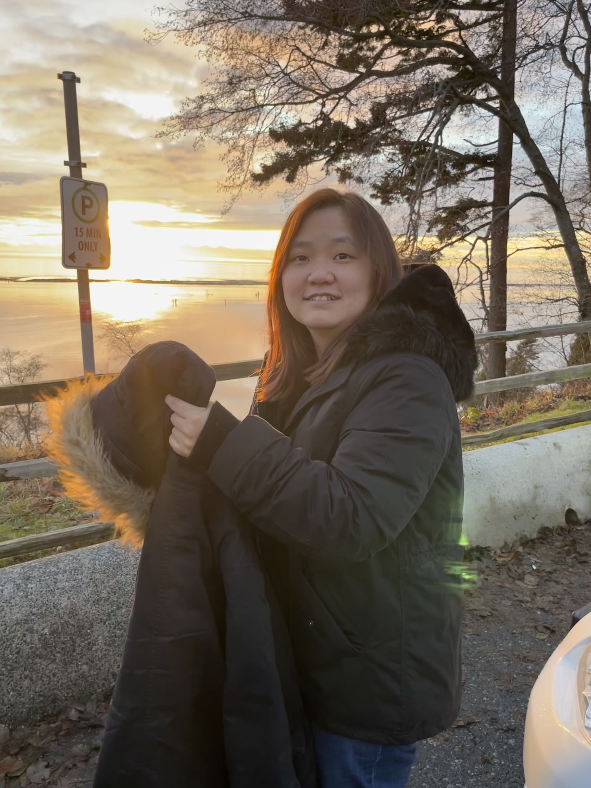

EXPERIMENT 01
Static obstacle avoidance
Avoiding obstacles along the planned trajectory.
ROBOTICS · AUTONOMOUS VEHICLES · SAFETY
PhD Candidate & Graduate Research Assistant
Mechanical & Aerospace Engineering · The Ohio State University
My work focuses on robotics and autonomous vehicles, with an emphasis on safety, testing, verification, and validation. I connect safety-critical control with system integration and experimental evaluation on real vehicles.
Seeking full-time roles in robotics, autonomous vehicles, safety, and verification & validation. Open to relocation.

IN THE FIELD
Comparing MPC-DC, MPC-CBF-QP, and MPC-CBF across three driving scenarios.
EXPERIMENT 01
Avoiding obstacles along the planned trajectory.
EXPERIMENT 02
Responding to a pedestrian entering the vehicle’s path.
EXPERIMENT 03
Evaluating controller behavior during an overtaking maneuver.
Collaborative research with Vishnu Renganathan and Qadeer Ahmed at OSU CAR / MSL.
Tests conducted in a controlled environment. Videos are sped up for visualization; vehicle speeds are reported in the paper.
BACKGROUND
Systems Engineering Intern
Developed safety metrics to identify safety-critical events and potential collisions, supporting the evaluation and validation of autonomous driving systems.
PhD Candidate · Graduate Research Assistant
Develop safety-critical collision avoidance controllers using MPC and CBF, with simulation and real-vehicle testing to evaluate autonomous driving behavior. Integrate PPO for learning-augmented control.
Systems Engineer
Led integration and interface design for coordinated operations across 20 autonomous UAVs. Worked on communication protocols, ground control system redundancy, and system verification.
Team Leader, Manufacturing Section
Led 15 operators in round-the-clock semiconductor manufacturing operations. Improved tool productivity by 30% through production coordination, cleanroom automated guided vehicle (AGV) systems, and automated measurement data system improvements.
SELECTED RESEARCH
U.S. Department of Transportation–funded research
Research within the CARMEN+ University Transportation Center, focused on resilient connected and autonomous vehicles, collision avoidance, and control under sensing and communication disturbances.
Overview and figure caption to be added.
Experiment context and setup details to be added.
Results and interpretation to be added.
Role and responsibilities
Methods and implementation
Validation and outcomes
Individual contributions within the collaborative project to be added.
Supported by the CARMEN+ University Transportation Center, sponsored by the U.S. Department of Transportation under Grant No. 69A3552348327. The views presented are those of the authors and do not necessarily represent the official views of the U.S. Department of Transportation.
PUBLICATIONS
2026
2026
Control Engineering Practice (CEP) · 2026
2026
2026 American Control Conference (ACC)
2025
2024
IEEE International Conference on Intelligent Transportation Systems (ITSC)
EXPERTISE
LET’S CONNECT
I’m interested in opportunities in robotics and autonomous vehicles, including safety, testing, verification, and validation.
chang.2314@osu.edu ↗